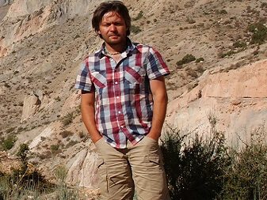

Dr hab. Piotr Owczarek prof. UWr.

Kontakt:
nr pokoju: 185
nr telefonu: +48 71 375 9573
e-mail: piotr.owczarek@uwr.edu.pl
konsultacje: wtorek 12.45 – 14.45
Zainteresowania naukowe:
- Wykorzystanie metody dendrochronologicznej w analizie aktywności procesów rzeźbotwórczych
- Dendrogeomorfologia i budowa anatomiczna krzewinek obszarów polarnych
- Aktywność ruchów masowych i procesów fluwialnych w Arktyce i obszarach wysokogórskich
- Paleogeografia czwartorzędu
- Antropogeniczne uwarunkowania zmian środowiska przyrodniczego Azji Centralnej
- Wpływ działalności człowieka i ekstremalnych procesów naturalnych na przemiany środowiska przyrodniczego Polski południowej
Wykształcenie:
- 1994 – 1999: Studia magisterskie na wydziale Nauk o Ziemi Uniwersytetu Śląskiego w Katowicach
- 2011: Dyplom magistra geografii, specjalność Geomorfologia - Paleogeografia, tytuł pracy magisterskiej: Środowisko sedymentacji aluwiów Warty w przełomie przez próg górnojurajski
- 2001 – 2005: Studia doktoranckie na wydziale Nauk o Ziemi Uniwersytetu Śląskiego w Katowicach
- 2005: Obrona pracy doktorskiej pod kierunkiem prof. dr hab. Kazimierza Klimka, tytuł pracy doktorskiej: Transformacja koryt rzecznych w warunkach dostawy grubookruchowego materiału stokowego
- 2014: Habilitacja (Instytut Geografii i Rozwoju Regionalnego, Uniwersytet Wrocławski), tytuł osiągnięcia naukowego: Współczesna dynamika procesów stokowych i fluwialnych w Arktyce oraz wybranych masywach górskich Europy Środkowej i Azji w świetle badań geomorfologicznych i dendrochronologicznych
Dydaktyka:
- Dendrochronologia w praktyce
- Biogeografia
- Geodiversity, Geoheritage, Geoconservation - towards sustainable Geoturism
- Współczesne przemiany środowiska w górach wysokich
- Środowisko polarne
- Metody rekonstrukcji zmian środowiska przyrodniczego
- Wpływ zjawisk ekstremalnych na gospodarowanie przestrzenią
- Wstęp do geografii fizycznej
- Zagrożenia i katastrofy przyrodnicze
- Formy ochrony przyrody (ćwiczenia terenowe)
- Hydrologia (ćwiczenia terenowe)
- Strefy krajobrazowe Europy (ćwiczenia terenowe)
Doświadczenia naukowe zdobyte za granicą:
- 2018:
- 16 – 22.10. Organizacja i prowadzenie sesji naukowej na kongresie Arctic Circle Assembly, Reykjavik, Islandia
- 01 – 12.10. Udział w ekspedycji badawczej w Góry Gegamskie, Armenia
- 2017:
- 31.03 – 07.04. Organizacja i prowadzenie sesji naukowej na konferencji Arctic Science Summit Week, Praga, Czechy
- 20. 07 – 10.08. Udział w ekspedycji badawczej w północnej części prowincji Quebec, Kanada
- 2015:
- Sierpień. Staż badawczy w stacji badawczej Abisko, Szwecja
- Lipec. Udział w ekspedycji naukowej w Pamir – Ałaj, Tadżykistan
- 2014:
- Lipiec - sierpień. Udział w ekspedycji naukowej w Pamir – Ałaj, Tadżykistan
- 19.04.-11.05. Wizyta studyjna w University of Tasmania, Hobart, Australia
- 2013: Sierpień. Wyprawa badawcza do regionu Troms, Norwegia
- 2012:
- Czerwiec – sierpień. Prowadzenie badań terenowych w ramach ekspedycji PAN na Wyspie Niedźwiedziej i Spitsbergenie
- 10-25.04. Staż i badania naukowe w Chengdu University of Technology, Chengdu Center of China Geological Survey, Chengdu, Chiny.
- 2011:
- Czerwiec – lipiec. Prowadzenie badań terenowych na Spistbergenie
- 28.03.-02.04. Wizyta studyjna w Geographisches Institut, Ruhr-Universität Bochum, Niemcy
- 2009: 18.05-06.06. “Summer school on dendrochronology and dendroclimatology”, Tucson, Laboratory of Tree Ring Research, University of Arizona, USA
- 2008: Czerwiec – lipiec. Prowadzenie badań terenowych na Spistbergenie
- 2007:
- Czerwiec – lipiec. Prowadzenie badań terenowych na Spistbergenie
- 29.10.-05.11. Staż naukowy w Swiss Federal Institute for Forest, Snow and Landscape Research, Zürich – Birmensdorf, Szwajcaria
- 2006: 19-25.11. 6th International Winter School on Wood Anatomy of Tree Rings, Davos Laret, Swiss Federal Research Institute WSL – Dendro Sciences Unit, Szwajcaria
- 2005: 1-27.02. Stypendium CEEPUS – Central European Exchange Program forUniversity Studies, Institute of Earth Sciences, Karl Franzes University Graz, Austria
- 2002: 7-14.07. “European Summer School on the geomorphology and Quaternary Geology of Alpine and Subalpine Environments”, Research Foudation for Alpine and Subalpine Environments – International Association of Geomorphology, Dornbirn, Nördlingen, Austria – Niemcy
- 2001: 20-30.07. International Summer School “Environmental hazards and sustainable development in the mountain regions”,, Institute of Geography Romanian Academy, Pătârlagele, Rumunia
Nagrody i wyróżnienia:
- 2018: Nagroda Rektora Uniwersytetu Wrocławskiego za osiągnięcia naukowe
- 2014: Nagroda Rektora Uniwersytetu Wrocławskiego za osiągnięcia naukowe
- 2009: Nagroda Rektora Uniwersytetu Wrocławskiego za osiągnięcia naukowe
- 2006: Nagroda Rektora Uniwersytetu Śląskiego za osiągnięcia naukowe
- 2006: Dyplom im. Stefana Kozarskiego przyznana przez Stowarzyszenie Geomorfologów Polskich w konkursie na najlepszą pracę doktorską z zakresu geomorfologii w roku 2005
Udział w projektach badawczych:
- EU Horizon 2020, grant agreement No 730938 - INTERACT, 2017 – 2018 r.: project REACT - Growth-ring record of modern extreme weather phenomena in the Low Arctic (REACT). Charakter udziału – główny wykonawca
- Grant NCN 2012/05/B/ST10/00437, 2012 – 2015: Przestrzenne uwarunkowania zmian w górnoreglowych ekosystemach świerkowych w świetle struktury depozycji zanieczyszczeń atmosferycznych w wybranych pasmach gór Polski. Charakter udziału – główny wykonawca
- Grant NCN N N306 601440, 2011 – 2014: Zmiany klimatyczne i ocena aktywności procesów peryglacjalnych południowo-zachodniego Spitsbergenu w świetle badań dendrochronologicznych. Charakter udziału – kierownik
- Grant NCN 2011/01/B/ST10/07096, 2011 – 2014: Porównanie zapisu procesów geomorfologicznych i pozageomorfologicznych w anatomii drewna drzew rosnących w obszarach górskich”. Charakter udziału – wykonawca
- Projekt badawczy SKLGP (State Key Laboratory of Geohazard Prevention and Geoenvironment Protection, Chengdu University of Technology, China), 2012 – 2013: Reconstruction of historic debris flow activity in the high mountains area. Czas realizacji: 2012-2013, kierownik projektu: dr Yongbo Tie, Chengdu Center of China Geological Survey. Charakter udziału – główny wykonawca
- Grant KBN nr N N306 312636, 2009 – 2012: Holoceńska i współczesna dynamika stoków w Górach Kamiennych (Sudety Środkowe). Charakter udziału –wykonawca
- Grant KBN PBR NR09-0029-04/2008, 2008 – 2011r.: Geoekologiczne warunki środowiska przyrodniczego Parku Narodowego Gór Stołowych, Projekt badawczo-rozwojowy. Charakter udziału – wykonawca
- Grant KBN 2 P04G 012 28, 2004 – 2007 r.: Wyznaczanie tempa przyrostu aluwiów oraz zawartości wybranych zanieczyszczeń w osadach pozakorytowych wyżynnych i nizinnych rzek Polski. Charakter udziału – główny wykonawca
Wybrane publikacje:
- 2019: Opała-Owczarek M, Błaś M, Owczarek P, Sobik M, Godek M, 2019, A
dendroclimatological study of east- and west-facing slopes in mountainous areas subjected to
strong air pollution (the Sudetes, Central Europe), Physical Geography 40 (2), 186-208.
https://doi.org/10.1080/02723646.2018.1547872 - 2018:
- Owczarek P., Opała-Owczarek, M., Rahmonov, O., Razzokov, A., Jary, Z., &
Niedźwiedź, T.
2018, Relationships between loess and the Silk Road reflected by environmental change
and its implications for human societies in the area of ancient Panjikent, central Asia.
Quaternary Research 89(3), 691-701.
https://doi.org/10.1017/qua.2017.69 - Schaetzl R.J., Bettis E.A., Crouvi O., Fitzsimmons K.E., Grimley D.A., Hambach U.,
Lehmkuhl F., Marković S.B., Mason J.A., Owczarek P., et al. 2018,
Approaches and challenges to the study of loess - Introduction to the LoessFest Special
Issue – Review. Quaternary Research 89, 563-618.
https://doi.org/10.1017/qua.2018.15 - Opała-Owczarek M., Pirożnikow E., Owczarek P., Szymański W., Luks B.,
Kępski D., Szymanowski M., Wojtuń B., Migała K. 2018, The influence of abiotic factors
on the growth of two vascular plant species (Saxifraga oppositifolia and Salix polaris)
in the High Arctic. Catena 163, 219-232.
https://doi.org/10.1016/j.catena.2017.12.018 - Opała-Owczarek, M., Owczarek P., Rahmonov O., Niedźwiedź T. 2018: The first
dendrochronological dating of timber from Tajikistan – potentiall for developing a
millennial tree-ring record. Tree-Ring Research 74 (1), 50-62.
https://doi.org/10.3959/1536-1098-74.1.50 - Jary, Z., Owczarek P., Ryzner, K., et al. 2018, Loess documentary sites and
their potential for geotourism in Lower Silesia (Poland). Open Geosciences, 10 (1),
647-660.
https://doi.org/10.1515/geo-2018-0052 - Widawski, K., Jary, Z., Oleśniewicz, P., Owczarek P. et al. 2018,
Attractiveness of
protected areas for geotourism purposes from the perspective of visitors: the example of
Babiogórski National Park (Poland). Open Geosciences 10 (1), 358-366.
https://doi.org/10.1515/geo-2018-0028
- Owczarek P., Opała-Owczarek, M., Rahmonov, O., Razzokov, A., Jary, Z., &
Niedźwiedź, T.
2018, Relationships between loess and the Silk Road reflected by environmental change
and its implications for human societies in the area of ancient Panjikent, central Asia.
Quaternary Research 89(3), 691-701.
- 2017:
- Owczarek P., Opała-Owczarek M., Rahmonov O., Mendecki M. 2017: 100 Years of
earthquakes
in the Pamir region as recorded in juniper wood: A case study of Tajikistan. Journal of
Asian Earth Sciences 138, 173-185.
https://doi.org/10.1016/j.jseaes.2017.02.011 - Malik I., Wistuba M., Tie Y., Owczarek P., Woskowicz-Ślęzak B., Łuszczyńska
K. 2017:
Mass movements of differing magnitude and frequency in a developing high-mountain area
of the Moxi basin, Hengduan Mts, China – A hazard assessment. Applied Geography 87,
54-65.
https://doi.org/10.1016/j.apgeog.2017.08.003 - Opała, M., Niedźwiedź, T., Rahmonov, O., Owczarek P., Małarzewski, Ł. 2017:
Towards improving the Central Asian dendrochronological network—New data from
Tajikistan, Pamir-Alay. Dendrochronologia 41, 10-23.
https://doi.org/10.1016/j.dendro.2016.03.006 - Rahmonov O, Rahmonov M., Opała-Owczarek M., Owczarek P., Niedzwiedz T. Myga-Piątek U., 2017, Ecological and cultural importance of juniper ecosystem in the area of Zeravshan valley, (Tajikistan) on the background of environmental condition and anthropogenic hazards, Geographia Polonica 90 (4), 441-461.
- Owczarek P., Opała-Owczarek M., Rahmonov O., Mendecki M. 2017: 100 Years of
earthquakes
in the Pamir region as recorded in juniper wood: A case study of Tajikistan. Journal of
Asian Earth Sciences 138, 173-185.
- 2016:
- Owczarek P., Opała M. 2016: Dendrochronology and extreme pointer years in
the tree-ring
record (AD 1951-2011) of polar willow from southwestern Spitsbergen (Svalbard, Norway).
Geochronometria 43 (1), 84-95.
https://doi.org/10.1515/geochr-2015-0035 - Opała M., Migała K., Owczarek P. 2016: Two centuries-long dendroclimatic
reconstruction based on Low Arctic Betula pubescens from Tromsø Region, Northern Norway.
Polish Polar Research 37 (4), 457–476.
https://doi.org/10.1515/popore-2016-0024 - Opała M, Owczarek P, 2016, Zmienność warunków termicznych Masywu Śnieżnika odtworzona na podstawie słojów rocznych Picea abies Karst. i pozostałości zabudowy drewnianej, Przyroda Sudetów 19: 211-222.
- Owczarek P., Opała M. 2016: Dendrochronology and extreme pointer years in
the tree-ring
record (AD 1951-2011) of polar willow from southwestern Spitsbergen (Svalbard, Norway).
Geochronometria 43 (1), 84-95.
- 2015:
- Godek M., Sobik M., Błaś M., Polkowska Ż., Owczarek P., Bokwa A., 2015:
Tree rings as an indicator of atmospheric pollutant deposition to subalpine spruce
forests in the Sudetes (Southern Poland). Atmospheric Research 151: 259-268.
https://doi.org/10.1016/j.atmosres.2014.09.001
- Godek M., Sobik M., Błaś M., Polkowska Ż., Owczarek P., Bokwa A., 2015:
Tree rings as an indicator of atmospheric pollutant deposition to subalpine spruce
forests in the Sudetes (Southern Poland). Atmospheric Research 151: 259-268.
- 2014:
- Owczarek P., Nawrot A., Migała K., Malik I., Korabiewski B., 2014.
Flood-plain responses to contemporary climate change in small High-Arctic basins
(Svalbard, Norway). Boreas 43 (2): 384-402.
https://doi.org/10.1111/bor.12061 - Migoń P., Kacprzak A., Malik I., Kasprzak M., Owczarek P., Wistuba M.,
Pánek T., 2014: Geomorphological, pedological and dendrochronological signatures of a
relict landslide terrain, Mt Garbatka (Kamienne Mts), SW Poland. Geomorphology 219:
213-231.
https://doi.org/10.1016/j.geomorph.2014.05.005
- Owczarek P., Nawrot A., Migała K., Malik I., Korabiewski B., 2014.
Flood-plain responses to contemporary climate change in small High-Arctic basins
(Svalbard, Norway). Boreas 43 (2): 384-402.
- 2013:
- Owczarek P., Latocha A., Wistuba M., Malik I., 2013. Reconstruction of
modern debris flow activity
in the arctic environment with the use of dwarf shrubs – (south-western Spitsbergen) a
new
dendrochronological approach. Zeitschrift für Geomorphologie 57 Suppl. 3: 75-95.
https://dx.doi.org/10.1127/0372-8854/2013/S-00145 - Malik I., Tie Y., Owczarek P., Wistuba W., Pilorz W., Woskowicz-Ślęzak B.
2013: Human-planted alder trees as a protection against debris flows (a
dendrochronological study from the Moxi Basin, Southwestern China). Geochronometria 40
(3): 208-216.
http://dx.doi.org/10.2478/s13386-013-0117-6 - Pawlik Ł., Migoń P., Owczarek P., Kacprzak A., 2013: Surface processes and
interactions
with forest vegetation on a steep mudstone slope, Stołowe Mountains, SW Poland. Catena
109: 203 – 216.
https://doi.org/10.1016/j.catena.2013.03.011
- Owczarek P., Latocha A., Wistuba M., Malik I., 2013. Reconstruction of
modern debris flow activity
in the arctic environment with the use of dwarf shrubs – (south-western Spitsbergen) a
new
dendrochronological approach. Zeitschrift für Geomorphologie 57 Suppl. 3: 75-95.
- 2012:
- Jary Z., Kasprzak M., Korabiewski B., Owczarek P., Jancewicz K., Schutty B., 2012: Współczesne procesy morfogenetyczne w górnej części zlewni Buchtarmy (Wysoki Ałtaj, Kazachstan). Landform Analysis 20: 31-49.
- Owczarek P., Remisz J. 2012: Znaczenie geomorfologiczne budowy anatomicznej pędów borówki czarnej Vaccinium myrtillus L. piętra subalpejskiego Karkonoszy. Przyroda Sudetów 15: 189-196.
- 2011:
- Owczarek P., Franklin R., 2011: Rock spiraea (Petrophytum caespitosum) from the Grand Canyon - habitat and growth rings, [w:] van der Maaten-Theunissen M, Spiecker H, Gärtner H, Helle G, Heinrich I (eds.)TRACE Tree Rings in Archaeology, Climatology and Ecology , Vol. 9, Scientific Technical Report 11/07, Potsdam : 84-88.
- Migoń P., Latocha A., Parzóch K., Kasprzak M., Owczarek P., Witek M., Pawlik Ł., 2011: Współczesny system morfogenetyczny Gór Stołowych. [w:] T. Chodak, C. Kabała, J. Kaszubkiewicz, P. Migoń, J. Wojewoda (red.) Geoekologiczne warunki środowiska przyrodniczego Parku Narodowego Gór Stołowych. WIND, Wrocław: 1-52.
- Owczarek P., Kassa A. 2011: Ocena tempa degradacji wybranych odcinków szlaków turystycznych Parku Narodowego Gór Stołowych w świetle badań dendrochronologicznych. Przyroda Sudetów 14: 155-166.
- 2010:
- Migoń P., PánekT., Malik I., Hrádecký J., Owczarek P., Šilhán K. 2010:
Complex landslide
terrain in the Kamienne Mountains, Middle Sudetes, SW Poland. Geomorphology, 124(3):
200-214.
https://doi.org/10.1016/j.geomorph.2010.09.024 - Łokas E., Wachniew P., Ciszewski D., Owczarek P., Chau, N. D. 2010: Simultaneous use of trace metals, 210Pb and 137Cs in floodplain sediments of a lowland river as indicators of anthropogenic impacts. Water, Air, and Soil Pollution, 207(1-4): 57-71. DOI:10.1007/s11270-009-0119-4
- Owczarek P., 2010: Talus cone activity recorded by tree-rings of Arctic dwarf shrubs: a study case from SW Spitsbergen, Norway. Geologija 52: 34-399. DOI:10.2478/v10056-010-0003-3
- Owczarek P., 2010: Dendrochronological dating of geomorphic processes In the High Arctic. Landform Analysis 14: 45-56.
- Migoń P., PánekT., Malik I., Hrádecký J., Owczarek P., Šilhán K. 2010:
Complex landslide
terrain in the Kamienne Mountains, Middle Sudetes, SW Poland. Geomorphology, 124(3):
200-214.
- 2009:
- Malik I., Owczarek P., 2009: Dendrochronological records of debris flow and
avalanche in
a mid-mountain forest zone (Eastern Sudetes – Central Europe), Geochronometria 34:
57-66.
https://doi.org/10.2478/v10003-009-0011-7 - R. Kaczka, I. Malik, P. Owczarek, H. Gärtner, G. Helle & I. Heinrich (eds.) 2009: TRACE – Tree Rings in Archaeology, Climatology and Ecology, Vol. 7. GFZ Potsdam – Sci. Tech. Rep. 09/03: 226 pp. DOI: 10.2312/GFZ.b103-09038
- Owczarek P., 2009: Dendrogeomorphological potencial of Salicaceae from SW Spitsbergen, Svalbard. [w:] Kaczka R, Malik I, Owczarek P, Gärtner H, Helle G, Heinrich I (eds.): TRACE - Tree Rings in Archaeology, Climatology and Ecology, Vol. 7. GFZ Potsdam, Scientific Technical Report STR 09/03: 181 – 186.
- Owczarek P., Nawrot A., Pętlicki M., 2009: Współczesny rozwój doliny Arie w świetle badań dendrochronologicznych, SW Spitsbergen. [w:] Kostrzewski A., Paluszkiewicz R. (red.) Geneza, litologia i stratygrafia utworów czwartorzędowych, tom V. Wydawnictwo Naukowe UAM, Poznań: 369 – 384.
- Malik I., Owczarek P., 2009: Dendrochronological records of debris flow and
avalanche in
a mid-mountain forest zone (Eastern Sudetes – Central Europe), Geochronometria 34:
57-66.
- 2008: Owczarek P., 2008: Hillslope deposits in gravel-bed rivers and
their effects
on the evolution of alluvial channel forms: A case study from the Sudetes and Carpathian
Mountains. Geomorphology 98: 111-12.
https://doi.org/10.1016/j.geomorph.2007.02.028 - 2007:
- Owczarek P. 2007: Transformacja koryt rzecznych w warunkach dostawy grubofrakcyjnego materiału stokowego (na przykładzie średniogórskich dopływów Odry i Wisły). Prace Naukowe Uniwersytetu Śląskiego w Katowicach nr 2510: 136 pp.
- Malik I., Owczarek P., 2007: Dendrochronologiczny zapis erozji i depozycji w potokach górskich przegrodzonych zaporami przeciwrumowiskowymi na przykładzie Černego Potoku (Jeseniki – Sudety Wschodnie), Przegląd Geograficzny, 79: 313-334.
- 2006:
- Malik I., Owczarek P., 2006: Wykorzystanie odsłoniętych korzeni drzew do określenia przebiegu erozji zboczy dolin i depozycji zwietrzelin w korytach rzek górskich (Sudety Wschodnie), Czasopismo Geograficzne, 76 (3): 101 – 116.
- Łokas E., Ciszewski D., Wachniew P., Owczarek P., 2006: Wykorzystanie 210Pb i metali ciężkich w badaniach tempa współczesnej sedymentacji zanieczyszczonych osadów fluwialnych, Przegląd Geologiczny 54 (10): 888 – 894
- Ciszewski D, Kramarz P., Malik I., Owczarek P., Zygmunt E., 2006: Geomorfologiczne skutki funkcjonowania i degradacji sztucznych progów wodnych, Czasopismo Geograficzne, 76(4): 329 – 343.
- 2004:
- Owczarek P., 2004: Układ i struktura średniogórskich koryt w warunkach lokalnej dostawy zwietrzelin (Sudety Wschodnie), Przegląd Geologiczny, 52 (11). 1082-1083.
- Owczarek P., 2004: The influence of hillslope delivery on the morphology of gravel bed rivers, Polish Flysh Carpathians, Geomorphologia Slovaca, 4 (1): 40-45.
- Owczarek P., 2004, Evolution of alluvial channel forms under the influence of hillslope sediment delivery (S Poland), [w:] M. Mikoš & D. Gutknecht (red.) INTERPRAEVENT 2004 – Changes within Natural and Cultural Habitat and Consequences. Tagungspublikation Band 4: 225-232.
- Owczarek P., 2004, Układ i struktura średniogórskich koryt w warunkach lokalnej dostawy zwietrzelin (Sudety Wschodnie) [w:] Geologiczne i środowiskowe problemy gospodarowania i ochrony doliny górnej i środkowej Odry. Państwowy Instytut Geologiczny, Wrocław: 83-96.
- 2003:
- Owczarek P., 2003: The variation in clast orientation in mid-mountain river channels under the influence of coarse-grained regolith supply, Polish Flysch Carpathians, Studia Geomorphologica Carpatho-Balcanica, 37: 97-110.
- Klimek K., Malik I., Owczarek P., Zygmunt E., 2003: Climatic and human impact on episodic alluviation in small mountain valley, Sudety Mountains, Geographia Polonica, 76 (2): 55-64.
- Klimek K., Malik I., Owczarek P., Zygmunt E., 2003, Historical flood evidence using geomorphological dendrochronological records Sudetes Mountains, Central Europe, [w:] V. R. Thorndycraft, G. Benito, M. Barriendos, M. C. Llasat (eds.), Paleofloods, Historical Data & Climatic Variability: Aplications in Flood Risk Assessment, Barcelona: 62-65.
- 2002: Owczarek P., 2002: The differentation of the conditions of alluvial sedimentation in the Warta Gorge through the Cracov Upland, Poland, Quaestiones Geographicae 22: 59-66.